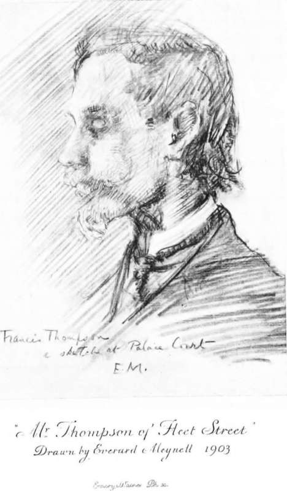

Friends And Opinions. Part 4
Description
This section is from the book "The Life Of Francis Thompson", by Everard Meynell. Also available from Amazon: The life of Francis Thompson.
Friends And Opinions. Part 4
He had no valet of whom to make a conquest; but a friendly editor, at any rate, was at his feet, even when the}7 were unpunctual. Mr. Lewis Hind writes :-
" During the seven years that I edited the Academy, I knew the poet intimately, seeing him two or three times a week. It amused him to write articles, and to know that his landlady was being paid, although such matters were of no real importance to him; but the weekly wage gave him pocket-money to buy the narcotics of his choice, and that was important.
" In memory I see him one miserable November afternoon communing with the Seraphim, and frolicking with the young-eyed Cherubim in Chancery Lane. The roads were ankle-deep in slush; a thin, icy rain was falling; the yellow fog enwrapped the pedestrians squelching down the lane ; and, going through them in a narrow-path, I saw Francis Thompson, wet and mud-spattered. But he was not unhappy. What is a day of unpleasant weather to one who lives in eternity ? His lips were moving, his head was raised, his eyes were humid with emotion, for above the roof of the Chancery Lane Safe Deposit Company, in the murk of the fog, he saw beatific visions. They were his reality, not the visible world.
" He was on his way to the office of the Academy with the manuscript of a book review, and on his damp back was slung the weather-worn satchel in which he would carry away volumes for the ensuing week. A Thompson article in The Academy gave distinction to the issue. What splendid prose it was ! Reading the proofs, we would declaim passages aloud for the mere joy of
' Poets as Prose Writers ' which must some day be recovered from the files ; he_ wiate_on_airvtihing. I discovered that his interest in battles, andTEe strategy of grea\cxurLmanders was as keen as his concern with cricket. So the satchel was filled with military memoirs, and retired generals ensconced in the armchairs of service clubs wondered. Here was a man who manipulated words as they manipulated men. Once or twice in those seven years of our intercourse a flame of his old poetic fire blazed out, and once I was able to divert the flame into the pages of the Academy. When Cecil Rhodes died I telegraphed to Thompson to hasten to the office. That was on a Monday. He appeared on the Tuesday. I asked him point blank if he would write an ode on Cecil Rhodes for the next issue of the paper, and without waiting for his refusal talked Rhodes to him for half an hour, roused his enthusiasm, and he departed with a half promise to deliver the ode on Thursday morning. Thursday came and nearly passed. I sent him three telegrams, but received no answer. It was necessary to go to press at eight o'clock. At half-past six he arrived, and proceeded to extract from his pockets a dozen and more scraps of crumpled paper, each containing a fragment of the ode. I pieced them together, sent Giving utterence to his periods.
He wrote a series of articles on the blurred manuscript to the printers, gave him money for his dinner, and exacted a promise that he would return in an hour to read the proof. He returned dazed and incoherent, read the proof standing and swaying as he read, and murmured : ' It's all right.' It was all right. I am prouder of having published that ode than of anything else that the Academy ever contained. In 1904, when I resigned the editorship of the Academy, we no longer met regularly; but I saw Thompson at infrequent intervals at Mrs. Meynell's house. He would come to dinner at any hour that suited his mood, take his bite and sip, and pace the room with a book in his hand, striking innumerable matches, never keeping his pipe alight, rarely taking part in the general conversation, but ever courteous and ever ready to laugh at the slightest pleasantry."
Late Copy
Of his editor, and to his editor, Thompson writes :-
" 39 Goldney Road, Harrow Road, Sunday Night.
"Dear Hind,-Since I was betrayed so unfortunately into putting a hasty definition into clumsy words, I beg to be allowed to define my intended meaning-to define my definition, in fact. I called you, I believe, ' a man of the world with a taste for letters.' It would be nearer my meaning if I had called you a man of action with a love for letters-and art. Wilfrid Blunt, Wyndham, etc, are examples of the class. I might also say Henley. It is true that you no more than Henley have ever been a man of action like Blunt or Wyndham. Some more inclusive term is needed. The essential thing is, that life occupies the principal place in your regard -not life as it should be lived, the ideal of life in other words-but actual everyday life, 'life as she is lived.' This is foremost, letters or art second. Raleigh and a host of the great Elizabethans_belonged to the same school. ' Man of action first' is perhaps the nearest I can get to it. ' Man of the world' is bungling because it bears so many significations. Anyway, now, I hope, you have some idea of my meaning. It was an antithesis between the pure thinker and recluse, on one hand ; the man interested in action for its own sake, yet with a foothold in letters, on the other.-Yours ever,
F. T."
Scruples in criticism, anxiety over ten shillings overdrawn from the Academy's cashier, and the imaginary coldness of his editor in consequence, brought Mr. Wilfred Whitten letters a column long, and though abbreviated (as most given in this book are), they are sufficiently characteristic of a profuse manner :-
"Dear Hind,-I muddled up the time altogether today. How, I do not now understand. I started off soon after 2. Thinking I had time for a letter to the Academy which it had been in my mind to write, I delayed my journey to write it. When I was drawing to a conclusion, I heard the clock strike 3 (as it seemed to me). I thought I should soon be finished, so went on to the end. A few minutes later, as it appeared, the clock struck again, and I counted 4. Alarmed, I rushed off-vexed that I should get in by half-past 4 instead of half-past 3, as I intended-and finished the thing in the train. I got to the Academy, and was struck all of a heap. There was nobody there, and it was ten past six! How I did it, I do not even now understand. I will be with you in good time to-morrow. But that cannot make amends to myself for such a fiasco and waste of time.-Yours, F. T."
Continue to: